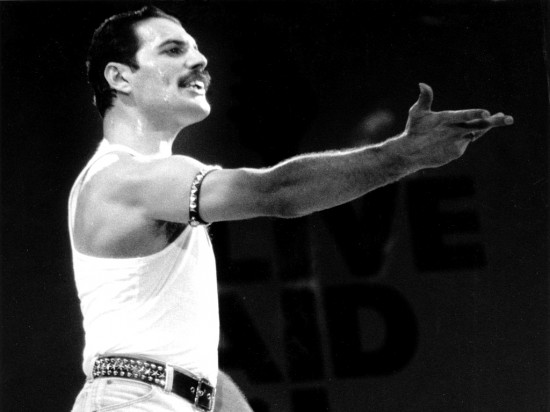

Freddie Mercury

Queen at Live Aid 13 July 1985
- 5 September 1946 was born singer-songwriter and musician Freddie Mercury (Farrokh Bulsara), in Zanzibar, Tanzania. As the frontman of Queen, Freddie Mercury was one of the most talented and innovative singers of the rock era. He spent time in a boarding school in Bombay (now Mumbai), India, where he studied piano. It was not long before this charismatic young man joined his first band, the Hectics.
- 1960s Moving to London with his family, Mercury attended the Ealing College of Art. He befriended a number of musicians around this time, including future bandmates.
- 1969 Mercury joined up with a group called Ibex as their lead singer. He played with a few other bands before joining forces with Taylor and May. They met up with bassist John Deacon in 1971, and the quartet — who Mercury dubbed Queen — played their first gig together that June.
- 1973 The band released their first self-titled album, but it took two more recordings for Queen's music to really catch on. Their third record, Sheer Heart Attack (1974), featured their first hit, "Killer Queen," a song about a high-class call girl. The single hit No. 2 on the U.K. charts, and peaked at No. 12 in the U.S.
- 1975 Mercury wrote the song "Bohemian Rhapsody," a seven-minute rock operetta, for the album. Overdubbing his voice, Mercury showed off his impressive four-octave vocal range on this innovative track. The song hit the top of the charts in Britain and became a Top 10 hit in the United States.
- 1978 "We Are the Champions" became a Top 10 hit in the United States and in Britain. It was featured on a single with "We Will Rock You" — both songs have taken on a life of their own as popular anthems played at sporting events.
- 1980 Always exploring new and different sounds, Queen also tried their hand at the big music trend of the time, with the disco-flavored "Another One Bites the Dust". Off that same album, The Game (1980), Mercury and the rest of the band showed their range as performers with the rockabilly-influenced hit "Crazy Little Thing Called Love," which Mercury penned.
- 1985 The performance at Live Aid at Wembley Stadium is often regarded as Queen's greatest single live performance. Their set lasted 21 minutes and consisted of "Bohemian Rhapsody" (ballad section and guitar solo), "Radio Ga Ga", a crowd singalong, "Hammer to Fall", "Crazy Little Thing Called Love", "We Will Rock You" (1st verse), and "We Are the Champions".
- 1989 Mercury largely retreated from public life. He did not promote or tour for Queen's next album, Innuendo (1991), and rumors about possible health problems began to circulate.
- November 23, 1991 Mercury released a statement: "I wish to confirm that I have been tested HIV-positive and have AIDS. I felt it correct to keep this information private to date to protect the privacy of those around me. However, the time has come now for my friends and fans around the world to know the truth and I hope that everyone will join with my doctors and all those worldwide in the fight against this terrible disease." The next day, he died from AIDS-related bronchial pneumonia at his London mansion. Mercury was only 45 years old.
If you have time, you should read more about this incredible human being on his Wikipedia entry